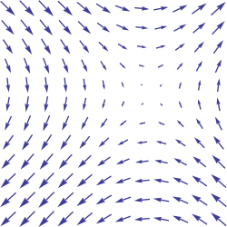
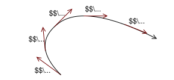
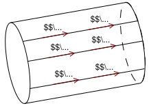
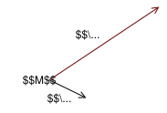
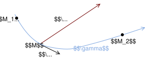
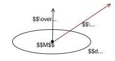

Un champ de scalaires (par exemple un champ de températures) est défini en un point \(M\) et
à un instant donné \(t\) par :
$$
\begin{align}
\mathbb{R}^4 & \overset { V }{ \longrightarrow } \mathbb{R} \\
(M,t) & \longrightarrow V(M,t)
\end{align}
$$
Un champ de scalaires est uniforme s’il est indépendant du point \(M\), ce qui se
note :
$$
\frac{\partial V}{\partial M} = 0
$$
En coordonnées cartésiennes cela donne :
$$
\frac{\partial V}{\partial x} = \frac{\partial V}{\partial y}
= \frac{\partial V}{\partial z} = 0
$$
Un champ de scalaires est stationnaire (ou permanent) s’il garde la même valeur en un point
\(M\) donné au cours du temps, ce qui se note :
$$
\frac{\partial V}{\partial t} = 0
$$
Champ de vecteurs
Définitions
Un champ de vecteurs (par exemple un champ de forces) est défini en un point \(M\) et à un
instant donné \(t\) par :
$$
\begin{align}
\mathbb{R}^4 & \overset { \overrightarrow{A} }{ \longrightarrow } \mathbb{R}^3 \\
(M,t) & \longrightarrow \overrightarrow{A(M,t)}
\end{align}
$$

Exemple de champ de vecteurs
Vocabulaire
Champ de vecteurs uniforme
Un champ de vecteurs est uniforme s’il est indépendant du point \(M\), ce qui se
note :
$$
\frac{\partial \overrightarrow{A}}{\partial M} = \overrightarrow{0}
$$
En coordonnées cartésiennes cela donne :
$$
\frac{\partial \overrightarrow{A}}{\partial x}
= \frac{\partial \overrightarrow{A}}{\partial y}
= \frac{\partial \overrightarrow{A}}{\partial z} = \overrightarrow{0}
$$
Avec \( \frac{\partial \overrightarrow{A}}{\partial x}
= \left(
\begin{matrix}
\frac{\partial A_x}{\partial x} \\
\frac{\partial A_y}{\partial x} \\
\frac{\partial A_z}{\partial x}
\end{matrix}
\right) \)
Champ de vecteurs stationnaire
Un champ de vecteurs est stationnaire (ou permanent) s’il garde la même valeur en un point
\(M\) donné au cours du temps, ce qui se
note :
$$
\frac{\partial \overrightarrow{A}}{\partial t} = \overrightarrow{0}
$$
En coordonnées cartésiennes cela donne :
$$
\frac{\partial \overrightarrow{A}}{\partial t} =
\left(
\begin{matrix}
\frac{\partial A_x}{\partial t} \\
\frac{\partial A_y}{\partial t} \\
\frac{\partial A_z}{\partial t}
\end{matrix}
\right)
= \overrightarrow{0}
$$
Lignes de champ
À un instant \(t\) fixé, une ligne de champ relie les points \(M\) tels que le champ
\(\overrightarrow{A(M,t)}\) soit tangent à la ligne. On l’oriente dans le sens du champ.

Exemple de ligne de champ
Les lignes de champ ne se croisent jamais, sauf :
là où le champ est nul
là où le champ n’est pas défini
Ces points sont appelés points singuliers. Une ligne de champ sans point singulier ne peut
pas être une courbe fermée.
Cartes de champ
Un ensemble de lignes de champ passant par un réseau de points donnés constitue une carte de
champ.
Tubes de champ
L’ensemble des lignes de champ qui s’appuient sur un contour fermé \(\gamma\) constitue un
tube de champ (c’est donc une surface).

Exemple de tube de champ
Circulation d’un champ de vecteurs
On définit la circulation d’un champ de vecteur à un instant \(t\) si le champ n’est pas
stationnaire.
Considérons un déplacement élémentaire \(\overrightarrow{dM}\) à partir du point \(M\).

Par définition, la circulation élémentaire du champ de vecteurs \(\overrightarrow{A(M,t)}\)
le long de ce déplacement élémentaire est :
$$
\delta \mathcal{C} = \overrightarrow{A(M,t)}\cdot \overrightarrow{dM}
$$
Considérons la circulation d’un champ le long d’une courbe orientée \(\gamma\) du point
\(M_1\) au point \(M_2\) par déplacements successifs \(\overrightarrow{dM}\) le long de
\(\gamma\), dans le sens positif de la circulation.

La circulation d’un champ de vecteurs le long du contour orienté \(\gamma\)
est :
$$
\mathcal{C}^{\gamma}_{M_1 \rightarrow M_2}
= \int_{ M_1 }^{ M_2 }{ \overrightarrow{A(M,t)}\cdot \overrightarrow{dM} }
$$
En général, la circulation d’un champ de vecteurs entre deux points \(M_1\) et \(M_2\)
dépend du chemin suivi.
On a en conséquence \( \mathcal{C}^{\gamma}_{M_1 \rightarrow M_2}
= -\mathcal{C}^{\gamma}_{M_2 \rightarrow M_1} \).
Si le contour \(\gamma\) est fermé, on note :
$$
\mathcal{C}^{\gamma} = \oint_{\gamma}{ \overrightarrow{A(M,t)}\cdot \overrightarrow{dM} }
$$
Flux d’un champ de vecteurs
On définit le flux d’un champ de vecteur à un instant \(t\) si le champ n’est pas
stationnaire.
Flux d’un champ de vecteurs à travers une surface élémentaire
Considérons une surface élémentaire \(d\mathcal{S}\) autour d’un point \(M\). Cette
surface est limitée par un contour élémentaire fermé \(\gamma\) dont l’orientation détermine
celle du vecteur surface \(\overrightarrow{d\mathcal{S}}\) (de norme \(d\mathcal{S}\)
orthogonal à l’élément de surface).

Le flux élémentaire du champ \(\overrightarrow{A(M,t)}\) à travers \(d\mathcal{S}\) est la
grandeur orientée :
$$ d\Phi = \overrightarrow{A(M,t)} \cdot \overrightarrow{d\mathcal{S}} $$
Flux d’un champ de vecteurs à travers une surface finie
Si la surface s’appuie sur un contour fermé \(\gamma\) orienté, on a par
définition :
$$
\Phi_{\mathcal{S}} =
\iint_{\mathcal{S}}{ \overrightarrow{A(M,t)} \cdot \overrightarrow{d\mathcal{S}} }
$$
Ce flux dépend de la surface \(\mathcal{S}\) choisie s’appuyant sur \(\gamma\). Les vecteurs
surface élémentaires sont orientés dès que le contour l’est.
Si la surface est fermée, tous les vecteurs surfaces élémentaires sont orientés par
convention de l’intérieur vers l’extérieur, et on note :
$$
\Phi_{\mathcal{S}} =
\bigcirc \!\!\!\!\!\!\!\!\iint_{ \mathcal{S} }
{ \overrightarrow{A(M,t)} \cdot \overrightarrow{d\mathcal{S}} }
$$
Les opérateurs linéaires
Opérateur formel nabla
L’opérateur nabla \(\nabla\) tire son nom d’une lyre antique qui avait la même forme de
triangle pointant vers le bas. Il s’agit d'un opérateur formel de \(\mathbb{R}^3\) défini en
coordonnées cartésiennes par :
$$
\overrightarrow\nabla =
\left(
\begin{matrix}
\frac{\partial}{\partial x} \\
\frac{\partial}{\partial y} \\
\frac{\partial}{\partial z}
\end{matrix}
\right)
$$
On écrit \(\overrightarrow\nabla\) pour souligner que formellement, l’opérateur nabla a les
caractéristiques d’un vecteur. Il ne contient certes pas de valeurs scalaires, mais on va
utiliser ses éléments constitutifs (que l’on peut voir comme des opérations en attente
d’argument — des opérateurs différentiels) très exactement
comme on aurait utilisé les valeurs scalaires composant un vecteur.
La notation nabla fournit un moyen commode pour exprimer les opérateurs vectoriels en
coordonnées cartésiennes.
Gradient
Cet opérateur linéaire s’applique à un champ de scalaire \(V(M,t)\).
Définition
En coordonnées cartésiennes, le gradient d’un champ de scalaires \(V\) a pour
expression :
$$
\overrightarrow{\mathrm{grad}}(V) =
\left(
\begin{matrix}
\frac{\partial V}{\partial x} \\
\frac{\partial V}{\partial y} \\
\frac{\partial V}{\partial z}
\end{matrix}
\right)
= \overrightarrow{\nabla}(V)
$$
Interprétation physique
La norme du vecteur gradient mesure les variations spatiales locales de
\(V\) : plus \(V\) varie fortement au voisinage de M, plus
\(\left\| \overrightarrow{\mathrm{grad}}(V) \right\| \) est grand.
Le vecteur \( \overrightarrow{\mathrm{grad}}(V) \) indique dans quelles direction et sens
varie localement \(V\).
Rotationnel
Définition
En coordonnées cartésiennes, le rotationnel d’un champ de vecteurs \(\overrightarrow{A}\)
a pour expression :
$$
\overrightarrow{\mathrm{rot}}\left(\overrightarrow{A}\right) =
\left(
\begin{matrix}
\frac{\partial A_z}{\partial y} - \frac{\partial A_y}{\partial z} \\
\frac{\partial A_x}{\partial z} - \frac{\partial A_z}{\partial x} \\
\frac{\partial A_y}{\partial x} - \frac{\partial A_x}{\partial y}
\end{matrix}
\right)
= \overrightarrow{\nabla} \wedge \overrightarrow{A}
$$
Interprétation physique
Le rotationnel permet de quantifier le caractère tourbillonnaire d’un champ au voisinage
d’un point.
Théorème de Stokes
La circulation sur un contour fermé du champ de vecteurs est egal au flux du rotationel de
ce champ de vecteurs à travers n’importe quelle surface qui s’appuie sur ce contour.
En coordonnées cartésiennes, la divergence d’un champ de vecteurs \(\overrightarrow{A}\)
a pour expression :
$$
\mathrm{div}\left(\overrightarrow{A}\right) =
\frac{\partial A_x}{\partial x}
+ \frac{\partial A_y}{\partial y}
+ \frac{\partial A_z}{\partial z}
= \overrightarrow{\nabla} \cdot \overrightarrow{A}
$$
Interprétation physique
L’opérateur divergence est un outil d’analyse vectorielle qui mesure si un champ vectoriel
rentre ou sort d’une zone de l’espace.
Théorème de Green-Ostrogradski
Le flux d’un champ de vecteur à travers une surface fermée est égal à l’intégrale de la
divergence du champ de vecteur sur le volume interieur à cette surface fermée.
$$
\bigcirc \!\!\!\!\!\!\!\!\iint_{ \mathcal{S} }
{ \overrightarrow{A(M,t)} \cdot \overrightarrow{d\mathcal{S}} } =
\iiint_{ \mathcal{V} } \mathrm{div}\left(\overrightarrow{A}\right) dv
$$
Laplacien
Laplacien scalaire
Le laplacien d’un champ scalaire mesure la différence entre la valeur du champ en un point
et sa moyenne autour de ce point.
De cette façon, le laplacien est nul lorsque la moyenne autour d’un point vaut la valeur en
ce point.
Le laplacien est défini par l’application de l’opérateur gradient suivie de l’application de
l’opérateur divergence :
$$
\Delta\left(V\right) = \mathrm{div}\left(
\overrightarrow{\mathrm{grad}}\left(V\right)
\right)
$$
En coordonnées cartésiennes, le laplacien d’un champ de scalaires \(V\) a pour
expression :
$$
\Delta\left(V\right) =
\frac{\partial^2 V_x}{\partial x^2}
+ \frac{\partial^2 V_y}{\partial y^2}
+ \frac{\partial^2 V_z}{\partial z^2}
= \overrightarrow{\nabla}^2\left(V\right)
$$
Laplacien vectoriel
Dans un espace euclidien, le laplacien vectoriel se définit le plus simplement en se plaçant
dans un système de coordonnées cartésiennes. Dans ce cas, le laplacien vectoriel d’un champ
de vecteurs quelconque \(\overrightarrow{A}\) a pour composantes le laplacien des
composantes de \(\overrightarrow{A}\).
$$
\Delta\left( \overrightarrow{A} \right) =
\left(
\begin{matrix}
\Delta\left(A_x\right) \\
\Delta\left(A_y\right) \\
\Delta\left(A_z\right)
\end{matrix}
\right)
$$
Un champ vectoriel se décompose en une composante longitudinale (irrotationnelle) et
une composante transverse (solénoïdale), soit la somme du gradient d’un champ
scalaire et du rotationnel d’un champ vectoriel.
Soit \(\overrightarrow{U}\) un champ vectoriel, alors il existe un champ vectoriel
\(\overrightarrow{A}\) et un champ scalaire \(V\) tels que :
$$
\overrightarrow{U} = \overrightarrow{\mathrm{rot}}\left(\overrightarrow{A}\right)
- \overrightarrow{\mathrm{grad}}\left(V\right)
$$